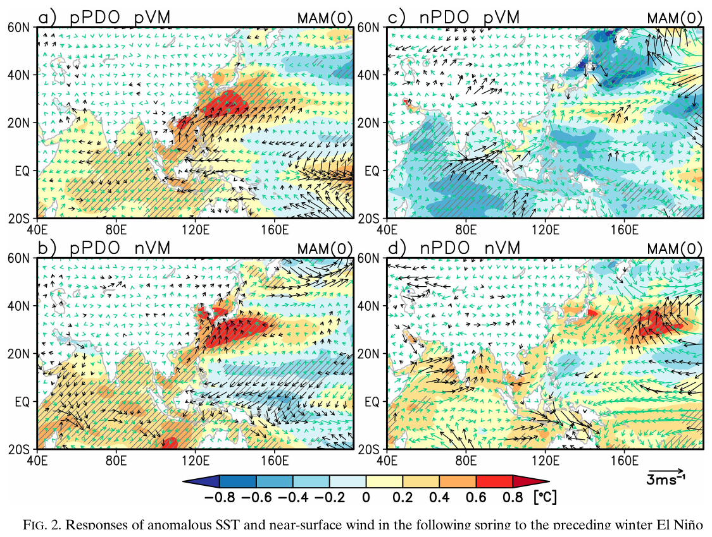
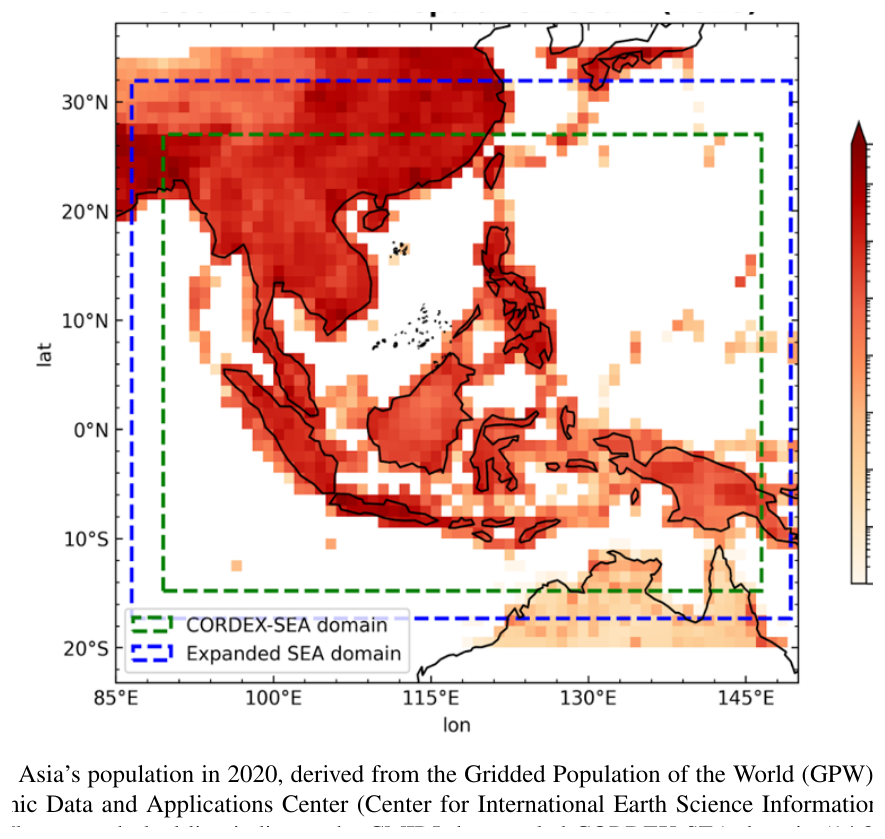
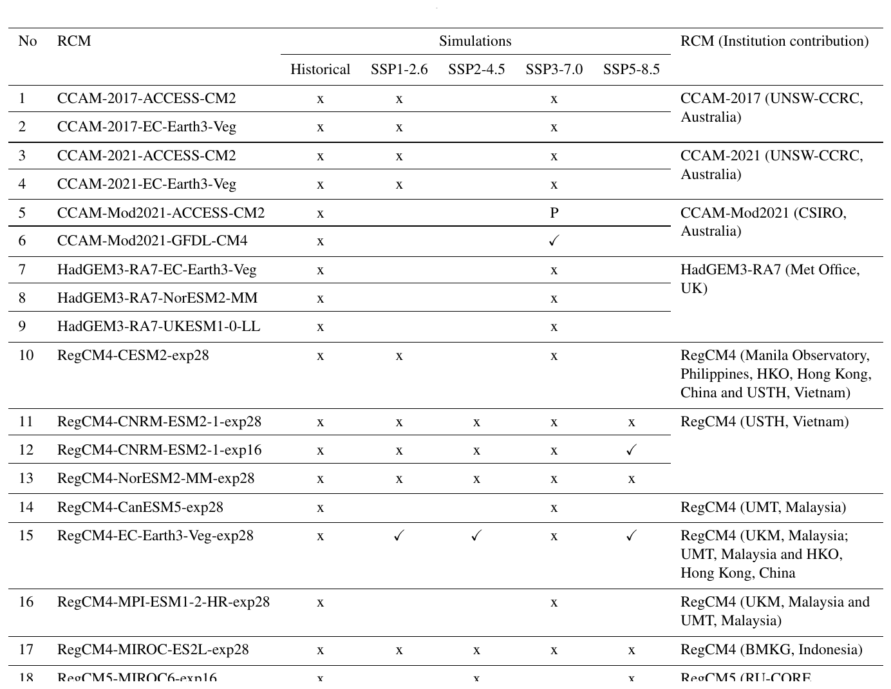

M5 · Ứng dụng mở rộng: QRC cho paper #1, Drifting cho paper #2
Dựng từ thiết kế đã có sẵn trong NOTE_hieu_va_mo_rong_QRC.md và NOTE_hieu_va_mo_rong_Drifting.md
Nguồn: NOTE_hieu_va_mo_rong_QRC.md (03_Papers_3_Thay_De_Phat_Trien/01_PDO_Victoria_ENSO_EASM_QRC/) + NOTE_hieu_va_mo_rong_Drifting.md (03_Papers_3_Thay_De_Phat_Trien/02_CORDEX_SEA_Downscaling_Drifting/) — thiết kế mở rộng đã có sẵn, dựng lại thành slide+quiz, không tự nghĩ lại từ đầu
PHẦN 1/5
01
Paper #1 + QRC: bài toán và hạn chế cũ
- Non-stationary ENSO-EASM
- Composite analysis & hạn chế
PHẦN 1 · Paper #1
Vì sao cần phương pháp mới hơn composite analysis
Bài toán cốt lõi (NOTE)Quan hệ ENSO↔EASM KHÔNG DỪNG (non-stationary) theo thời gian — bị điều biến bởi PDO/VM (thang thời gian thập kỷ) trong khi ENSO biến đổi theo mùa/năm. Đây là dạng "điều biến phi tuyến giữa nhiều chuỗi khí hậu có thang thời gian khác nhau".
Hạn chế của composite analysis gốc(1) Giả định tuyến tính trong từng nhóm pha; (2) 165 năm chia 8 nhóm ⇒ mỗi nhóm chỉ còn ~15-25 năm dữ liệu — dữ liệu quá ít để học quan hệ phi tuyến phức tạp.
PHẦN 2/5
02
Thiết kế QRC mở rộng cho paper #1
- 3 kênh input
- Explicit vs memory register
- Baseline bắt buộc
PHẦN 2 · Thiết kế QRC
4 thành phần thiết kế (từ NOTE_hieu_va_mo_rong_QRC.md)
| Thành phần thiết kế | Vai trò |
|---|
| Explicit register (3 kênh) | ENSO (Niño3.4/ONI), PDO, VM — mỗi chỉ số 1 nhóm qubit riêng, giữ ký ức ngắn hạn tường minh |
| Quantum memory register | Giữ "trạng thái điều biến" chậm (PDO/VM) — không cần tách pha rồi composite như bài gốc |
| Readout | Hồi quy tuyến tính dự báo EASM index / mưa mùa hè, lead time 1-2 mùa |
| Baseline bắt buộc | Composite/SVD gốc + ESN cổ điển (tách "lợi ích QRC" khỏi "lợi ích RC nói chung") |
📖 Giải thích cho người mới bắt đầu
Ý tưởng cốt lõi: để reservoir TỰ HỌC cách trộn 1 chuỗi nhanh (ENSO) với 2 chuỗi chậm (PDO, VM), thay vì nhà nghiên cứu phải tự tay chia 8 nhóm rồi phân tích riêng từng nhóm như bài gốc.
PHẦN 2 · Thiết kế QRC
Checklist trước khi code (chưa hoàn thành)
Việc chưa xong (trung thực)Đây mới là THIẾT KẾ Ý TƯỞNG — NOTE gốc đánh dấu rõ 3 mục "chưa làm": (1) đọc Methods lấy chính xác công thức VM index + nguồn SST (HadISST hay ERSST?); (2) xác nhận train trên chuỗi liên tục 165 năm, không rời rạc hoá 8 nhóm; (3) liên hệ thầy Dũng/thầy Thành xin index đã xử lý sẵn.
PHẦN 2 · Thiết kế QRC
Hình gốc: 4 tổ hợp pha PDO×VM cần học (xem lại từ M1)

4 tổ hợp pha PDO×VM — chính là cấu trúc dữ liệu mà thiết kế QRC ở trên nhắm tới học trực tiếp, không rời rạc hoá
PHẦN 3/5
03
Paper #2 + Drifting: downscaling là 1 pushforward
- x_highres=f(x_lowres)
- 62 mô phỏng RCM có sẵn
- Bias hệ thống theo họ RCM
PHẦN 3 · Thiết kế Drifting
Downscaling = bài toán pushforward đúng dạng Drifting Model
- x_lowrestrường CMIP6 thô (điều kiện/conditioning)
- x_highrestrường độ phân giải cao, mục tiêu khớp RCM output thật
- 62 mô phỏngđã có sẵn từ paper #2 — dùng làm "ground truth" huấn luyện, không cần chạy RCM lại sau khi train xong
PHẦN 3 · Thiết kế Drifting
Hình gốc: miền không gian CORDEX-SEA

Miền CORDEX-SEA (xanh lá) và miền mở rộng (xanh dương) dùng cho hầu hết mô phỏng CMIP6-downscaled
PHẦN 3 · Thiết kế Drifting
Hình gốc: bảng danh sách mô phỏng (nguồn cặp input-output để train Drifting)

22 cấu hình RCM×GCM, mỗi hàng có thể chạy nhiều kịch bản SSP — tổng cộng paper báo cáo 62 mô phỏng (x/✓) qua 3 RCM (CCAM, HadGEM3-RA7, RegCM4/5)
PHẦN 3 · Thiết kế Drifting
Lợi ích và test case ưu tiên
Lợi ích chi phí tính toán62 mô phỏng RCM (nhiều tuần/lượt trên HPC) dùng 1 LẦN để huấn luyện Drifting; sau đó sinh ensemble member mới chỉ cần 1 forward pass — rẻ hơn rất nhiều so với chạy lại RCM.
Vùng test khó nhấtMaritime Continent (quần đảo Đông Nam Á) — RCM truyền thống khó mô phỏng nhất do biến thiên không gian mưa lớn — NOTE xác định đây là test case giá trị khoa học cao nhất.
PHẦN 3 · Thiết kế Drifting
Kiến trúc cụ thể + checklist chưa hoàn thành
- Network f: U-Net hoặc Vision Transformer (thay backbone ảnh tự nhiên của paper gốc)
- Input: trường CMIP6 thô + conditioning (model ID, kịch bản phát thải)
- Output: trường RCM (dùng 15 mô phỏng đã qua benchmark — "đáng tin cậy nhất")
- Đánh giá: FID/CRPS/RMSE so với RCM thật, đặc biệt ở Maritime Continent
Việc chưa xong (trung thực)Chưa trích xuất dữ liệu 62 mô phỏng từ Zenodo, chưa xác định cặp input-output đúng theo config benchmark, chưa liên hệ thầy Thành về khả năng tiếp cận dữ liệu/code gốc.
PHẦN 4/5
04
Sơ đồ pipeline tổng hợp
PHẦN 4 · Pipeline
2 luồng thiết kế song song: QRC cho ENSO-EASM, Drifting cho CORDEX-SEA

5 bước mỗi hướng — xem chi tiết từng bước ở Phần 2 (QRC) và Phần 3 (Drifting) phía trên
PHẦN 5/5
05
References
- Hình đã dùng trong module này
PHẦN 5 · References
Nguồn hình ảnh
- Fig. 2 — Nguyen-Le, D. & Ngo-Duc, T. (2025). Journal of Climate, 38(20), 5655–5670. DOI: 10.1175/JCLI-D-24-0626.1. Trang 5657.
- Fig. 1 & Table 1 — Nguyen, P. L. et al. (2026). "The CMIP6-downscaled CORDEX-Southeast Asia (SEA) ensemble." Geoscientific Model Development, 19(16), 7653–7685. DOI: 10.5194/gmd-19-7653-2026. Trang 7655–7656.
- Sơ đồ pipeline (M5): tự vẽ, tổng hợp 2 thiết kế từ NOTE_hieu_va_mo_rong_QRC.md và NOTE_hieu_va_mo_rong_Drifting.md — không phải hình trích từ paper.